誕生日ライブ会場（高円寺ジュンジョー）への行き方
1.
JR高円寺駅の北口に出ます。
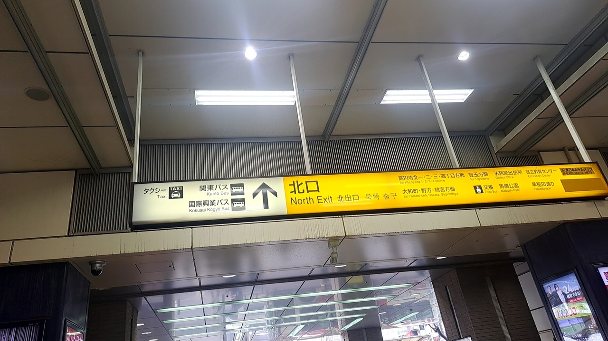
2.
北口に出たら、左へ進みます。
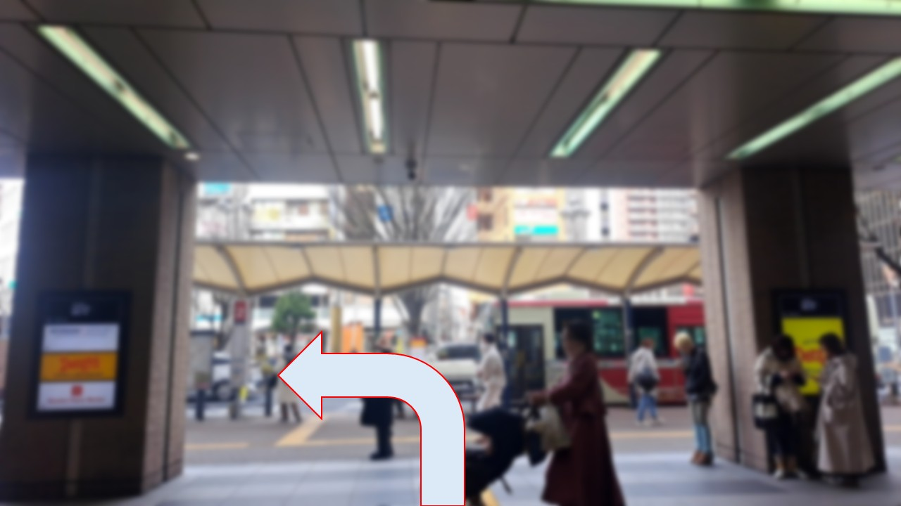
3.
左へ曲がったらまっすぐ進みます。
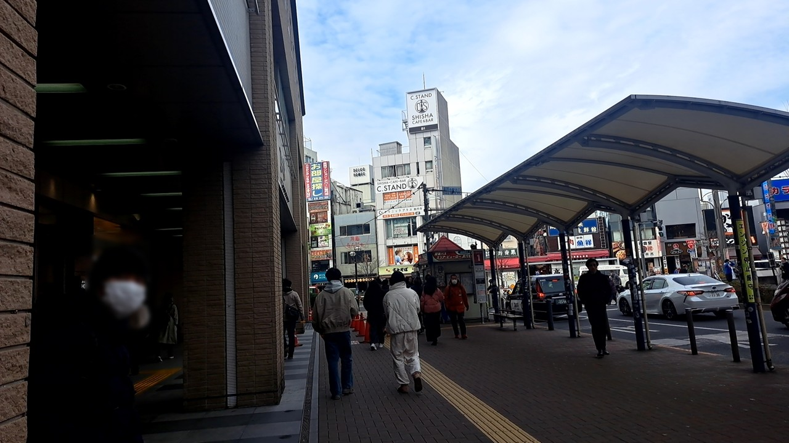
4.
3から進むと、右手に横断歩道が見えます。
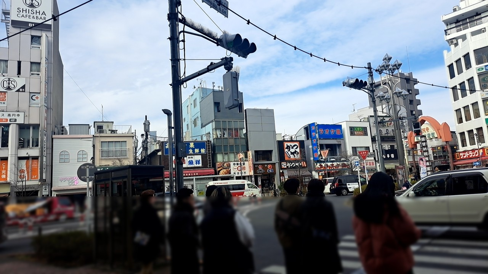
5.
サンドラック前の横断歩道を渡ります。
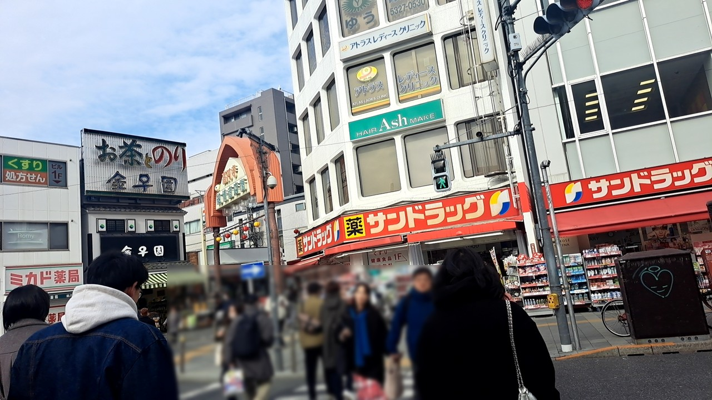
6.
横断歩道を渡り、高円寺純情商店街のゲートをくぐります。
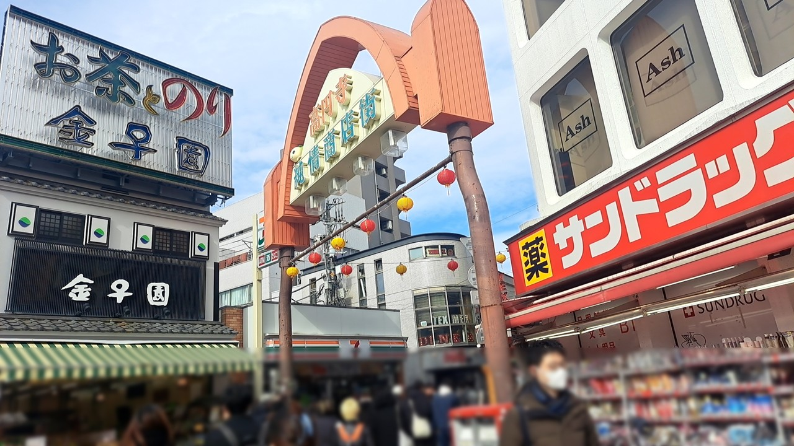
7.
商店街を道なりに進みます。
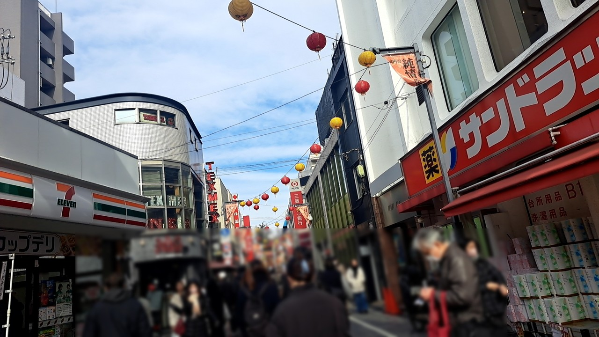
8.
AOKIが見えたら左に曲がります。
ファミリーマートの入り口が見えたら行きすぎなので気を付けてください。
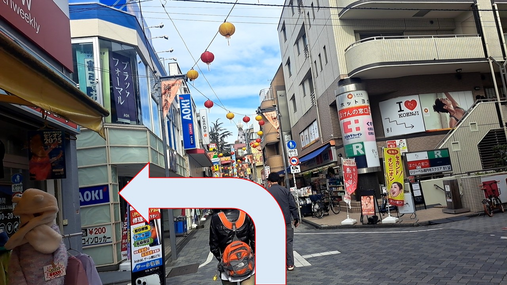
9.
8で曲がると右にAOKIがある細い通路があるので、そこを通ります。
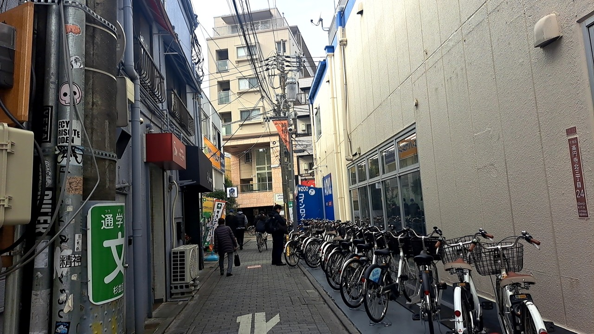
10.
通路を抜けると、右前に焼肉のお店があります。そこを右に曲がります。
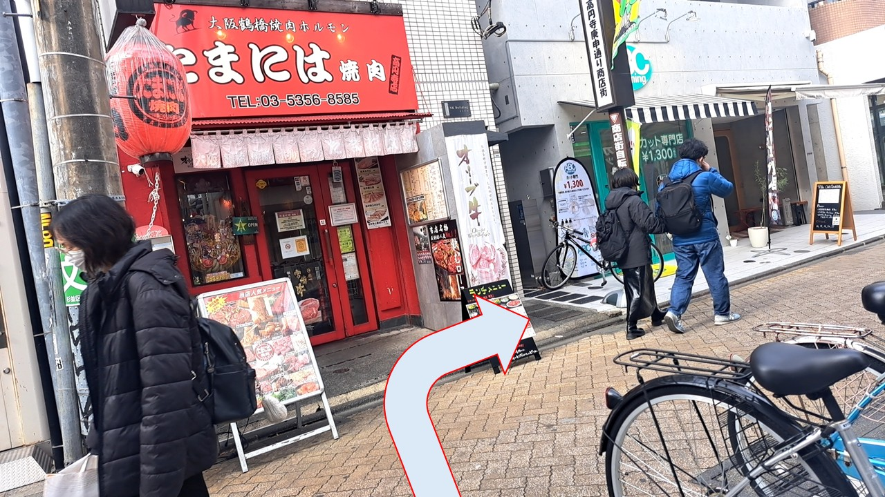
11.
10で右に曲がりそのまま直進すると、左手にカプセル薬局、右手にチョコザップがある場所が出てきます。
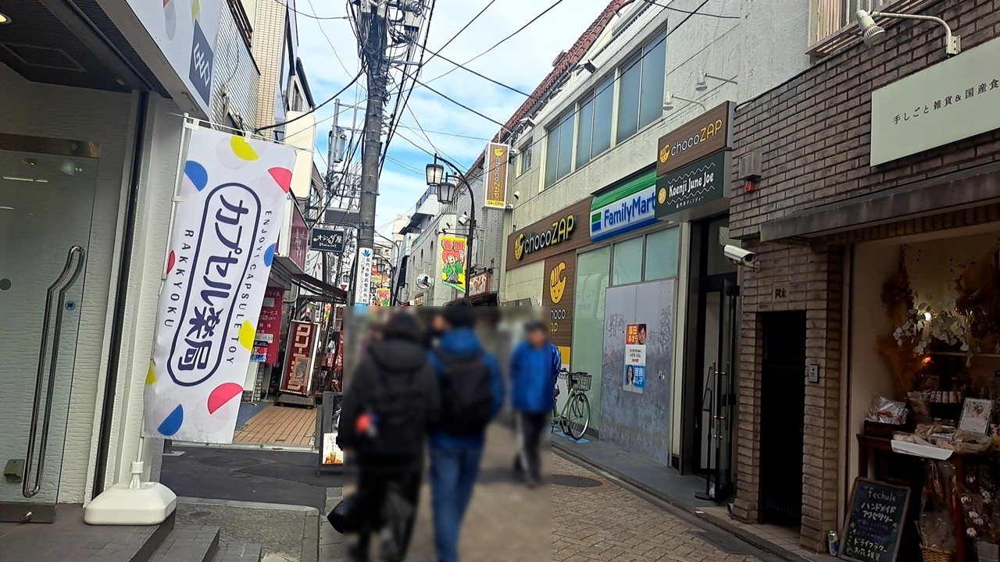
12.
チョコザップのビルの3階が誕生日ライブの会場となります。
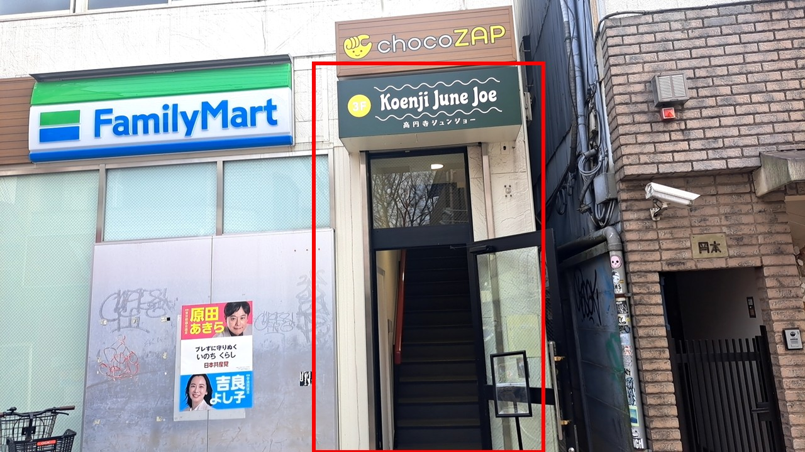
ご来場されるお客様へ
開場まではこのビルの前にある、カプセル薬局とクリーニングの間の通路～公園でお待ちください。
近隣のご迷惑にならないようにお待ちください。
準備が出来次第、係員が呼び込みを始めますので、係員の指示があるまでお待ちください。